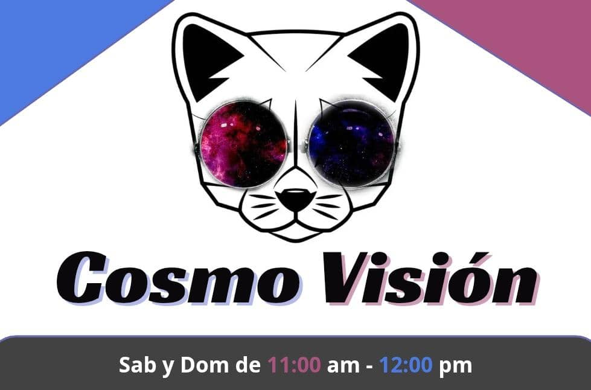

Noticias Clave Online

Clave 99.3 FM
Bienvenido a tu emisora online en vivo desde Altagracia De Orituco, Venezuela. Aquí disfrutaras de noticias clave, música variada, entretenimiento y programas exclusivos como Cosmo Visión. Escúchanos en cualquier parte del mundo.
쯈u칠 es Clave 99.3FM?
Clave 99.3FM es una emisora de radio online en vivo desde Altagracia de Orituco, Venezuela, que transmite música variada, noticias de Venezuela e internacionales, y programas exclusivos como Cosmo Visión. Conectamos con la audiencia juvenil y adulta ofreciendo entretenimiento, cultura e información en tiempo real.